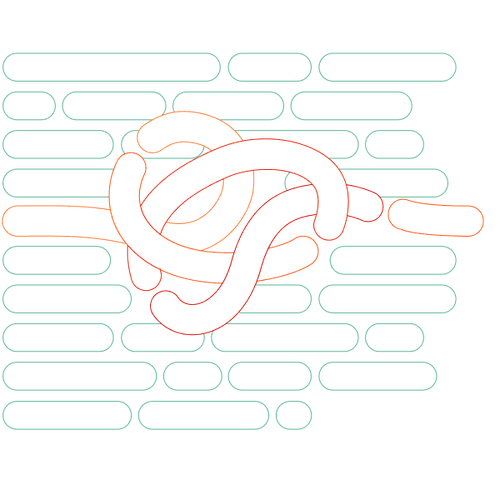

Mit der Academy erhaltet ihr im Business-Plan praxisnahe Lernmodule rund um Facilitation und wirksame Transformation.
Gemeinsam mit 9 Spaces zeigt Plan International Deutschland, wie wertebasiertes Arbeiten Orientierung gibt – nach innen wie nach außen.

Dieses Tool hilft euch dabei, euch verständlicher auszudrücken.
In vielen Teams gibt es keine expliziten Regeln dazu, wie eigentlich kommuniziert wird. Baut euch eine eigene Policy, die die wichtigsten Grundregeln festhält.
Dieses Tool setzt da an, wo viele Konflikte beginnen und auch scheitern: beim Perspektivwechsel. Es hilft dabei, Konflikte schneller und konstruktiver zu lösen.
Dieses Tool hilft euch dabei, eure Kolleg*innen besser zu verstehen und gezielt Wertschätzung für sie auszudrücken.